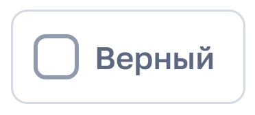
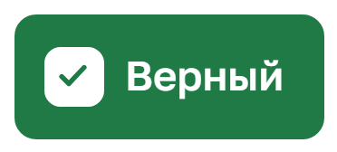

по подготовке тестов для аккредитации в веб-системе «Тесты для аккредитации»
для преподавателей
2026
Содержание
1 Общие положения
Настоящая инструкция описывает порядок подготовки тестов для аккредитации в веб-системе «Тесты для аккредитации». Каждый тест создаётся по одной дисциплине. Готовые тесты администратор системы загружает в Moodle.
Система работает в браузере и не требует установки программ. Адрес системы: https://bstu-tests.duckdns.org. Логин и пароль для входа выдаёт администратор системы.
Порядок работы преподавателя:
войти в систему (раздел 2);
создать тест по дисциплине (раздел 3);
добавить вопросы и отметить верные ответы (раздел 4);
при необходимости задать параметры теста (раздел 5);
нажать кнопку «Готово» и устранить замечания, если система их покажет (раздел 6).
Все изменения сохраняются автоматически. Работу над тестом можно прервать в любой момент и продолжить позже.
2 Вход в систему
Для входа в систему необходимо:
открыть в браузере адрес https://bstu-tests.duckdns.org;
ввести логин и пароль в соответствующие поля (рисунок 1);
нажать кнопку «Войти».
Рисунок 1 – Страница входа в систему
Чтобы проверить правильность ввода пароля, нажмите на значок глаза справа в поле «Пароль»: введённые символы станут видны. Повторное нажатие снова скрывает пароль.
Примечание. После пяти неверных попыток ввода пароля подряд вход блокируется на 15 минут. Если пароль не подходит, уточните его у администратора системы.
Для выхода из системы нажмите «Выйти» в правом верхнем углу страницы.
3 Создание теста
Для создания теста необходимо:
на главной странице нажать кнопку «+ Новый тест»;
заполнить поля «Дисциплина» и «Ваше ФИО». Поле «Кафедра» заполнять не обязательно (рисунок 2);
нажать кнопку «Создать тест».
Рисунок 2 – Форма создания теста
Система запоминает ФИО и кафедру, поэтому при создании следующего теста их не нужно вводить повторно.
Примечание. Если тест по указанной дисциплине уже существует, система выдаст предупреждение и предложит открыть его. Создавать второй тест по той же дисциплине не следует, лучше дополнить существующий.
После создания теста открывается редактор (рисунок 3). Вопросы добавляются кнопками в нижней части страницы.
Рисунок 3 – Редактор нового теста
4 Добавление вопросов
Вопросы можно добавлять по одному (подраздел 4.1) или вставить весь тест из документа Word сразу (подраздел 4.2).
4.1 Добавление вопроса вручную
Нажмите кнопку «+ Добавить вопрос». Появится карточка вопроса (рисунок 4). Введите текст вопроса и варианты ответа, затем нажмите кнопку «Верный» напротив правильного варианта. Правильный вариант выделяется зелёным цветом.
Рисунок 4 – Карточка вопроса
Если правильных вариантов несколько, отметьте каждый из них. В этом случае студент должен будет выбрать все верные варианты. Тип вопроса система определяет автоматически.
Таблица 1 – Элементы карточки вопроса
Элемент
Назначение


Кнопка «Верный». Отмечает вариант как правильный: кнопка становится зелёной (справа). Повторное нажатие снимает отметку.
Удаляет вариант ответа. Расположен справа от каждого варианта.
Добавляет поле для ещё одного варианта ответа.
Добавляет к вопросу изображение (PNG, JPG или GIF размером до 5 МБ). Изображение можно также вставить сочетанием клавиш Ctrl+V или перетащить мышью на карточку вопроса.
Перемещают вопрос выше или ниже в списке.
Открывает меню дополнительных действий с вопросом (подраздел 4.4).
Удаляет вопрос. Сразу после удаления внизу страницы появляется кнопка «Вернуть», с помощью которой вопрос можно восстановить.
4.2 Вставка теста из документа Word
Если тест уже набран в Word, его можно вставить целиком. Для этого необходимо:
нажать кнопку «Вставить из Word»;
в документе Word выделить весь текст (Ctrl+A) и скопировать его (Ctrl+C);
щёлкнуть в левое поле открывшегося окна и вставить текст (Ctrl+V);
проверить в правой части окна, как система распознала вопросы и верные ответы (рисунок 5);
нажать кнопку «Добавить N вопросов».
Рисунок 5 – Окно вставки теста из Word
Система распознаёт верный ответ, если в документе Word выполнено одно из условий:
вариант выделен полужирным шрифтом, подчёркиванием, цветом или заливкой;
после варианта стоит знак «*»;
после вариантов ответа есть строка вида «Ответ: б».
Пример оформления вопроса:
1. Единица измерения силы в СИ:
а) Джоуль
б) Ньютон *
в) Ватт
Примечание. После вставки просмотрите добавленные вопросы. Если у какого-либо вопроса верный ответ не распознан, отметьте его вручную кнопкой «Верный».
4.3 Другие типы вопросов
Кроме вопросов с выбором ответа, система поддерживает другие типы вопросов. Чтобы добавить такой вопрос, нажмите кнопку «Другой тип вопроса» и выберите нужный тип (рисунок 6, таблица 2).
Рисунок 6 – Выбор типа вопроса
Таблица 2 – Типы вопросов
Тип вопроса
Описание
Верно или неверно
Студент оценивает утверждение как верное или неверное.
Ответ словом
Студент вводит ответ самостоятельно. Можно указать несколько допустимых вариантов написания.
Ответ числом
Студент вводит число. Можно задать допустимую погрешность (±).
Соответствие
Студент сопоставляет пары, например термин и определение. Можно добавить лишний ответ без пары, чтобы затруднить угадывание.
4.4 Дополнительные действия с вопросом
Кнопка «⋯» в карточке вопроса открывает меню (рисунок 7), в котором доступны:
«Сделать копию»: создаёт копию вопроса, это удобно для однотипных вопросов;
«Тип вопроса»: изменяет тип уже набранного вопроса;
«Баллы за вопрос»: по умолчанию 1 балл;
«Перемешивать варианты»: варианты ответа показываются каждому студенту в случайном порядке. Рекомендуется оставить этот параметр включённым.
Рисунок 7 – Меню дополнительных действий с вопросом
5 Параметры теста
Параметры теста задаются в верхней части редактора по ссылке «Время и число вопросов» (рисунок 8). Все параметры необязательны: если их не заполнить, администратор настроит тест самостоятельно.
Рисунок 8 – Параметры теста
Таблица 3 – Параметры теста
Параметр
Описание
Время, мин
Время на прохождение теста. Если поле не заполнено, время не ограничено.
Сколько вопросов получит студент
Количество вопросов, которые получит каждый студент. Вопросы выбираются случайно из всех вопросов теста. Например, если в тесте 100 вопросов, а в поле указано 25, каждый студент получит свои 25 случайных вопросов. Если поле не заполнено, студент получит все вопросы.
Попыток
Допустимое количество попыток прохождения теста.
Проходной балл, %
Минимальный процент правильных ответов для успешного прохождения.
Перемешивать вопросы
Вопросы показываются студенту в случайном порядке.
Комментарий для администратора
Дополнительные пожелания по настройке теста.
6 Сохранение и завершение работы над тестом
В верхней части редактора расположена панель (рисунок 9), на которой отображается состояние сохранения:
«Сохранено»: все изменения записаны;
«Сохраняю…»: идёт сохранение;
«Нет связи, повторяю…»: нет подключения к интернету. Изменения будут сохранены автоматически после восстановления связи.
Рисунок 9 – Панель редактора
Когда все вопросы добавлены, нажмите кнопку «Готово» на панели или внизу страницы. Система проверит тест.
Если в тесте есть ошибки, вопросы с ошибками выделяются красным цветом и в каждом указывается, что нужно исправить (рисунок 10). На панели появляется кнопка «Исправить: N», где N — число ошибок. При нажатии на неё система по очереди показывает вопросы с ошибками.
Рисунок 10 – Вопрос с ошибкой
Типичные ошибки:
не отмечен верный ответ;
не заполнен текст вопроса;
указано менее двух вариантов ответа;
в параметрах теста указано больше вопросов для студента, чем есть в тесте.
Если ошибок нет, появляется сообщение «Тест готов» (рисунок 11). Тест становится доступен администратору. Если позже потребуется внести изменения, откройте тест, исправьте его и снова нажмите «Готово».
Рисунок 11 – Сообщение о готовности теста
7 Список тестов и предварительный просмотр
На главной странице («Все тесты») отображается список тестов (рисунок 12). Чтобы открыть тест, нажмите на строку с ним. Если тестов много, над списком появляется строка поиска по дисциплине и преподавателю.
Рисунок 12 – Список тестов
Таблица 4 – Состояния теста
Состояние
Значение
Заполняется
Тест ещё не сдан: вопросы не добавлены или кнопка «Готово» не нажималась.
Нужно исправить
В тесте есть ошибки, например не отмечен верный ответ. Откройте тест и нажмите «Готово»: система покажет, что требуется исправить.
Готов
Тест проверен и передан администратору.
Внизу редактора находится ссылка «Посмотреть как студент». Она открывает тест в том виде, в котором его увидят студенты (рисунок 13). Кнопка «Показать ответы» выделяет верные варианты зелёным цветом, что удобно для итоговой проверки теста.
Рисунок 13 – Предварительный просмотр теста
Там же находится ссылка «Удалить тест». Удалённый по ошибке тест можно восстановить, обратившись к администратору системы.
8 Ответы на частые вопросы
Вкладка браузера была закрыта. Сохранились ли изменения?
Да. Все изменения сохраняются автоматически. Откройте тест из списка и продолжите работу.
Появилось сообщение «Этот тест сейчас правят ещё в одном окне».
Тест открыт в двух вкладках или его одновременно редактирует другой пользователь. Закройте лишнюю вкладку и обновите страницу. Система не перезаписывает чужие изменения без предупреждения.
Появилось сообщение «Вы вышли из системы».
Войдите в систему повторно по ссылке в сообщении (откроется новая вкладка). Введённые данные сохранятся.
Можно ли работать над одним тестом вдвоём?
Можно, но по очереди. Одновременное редактирование одного теста не рекомендуется.
Нужно ли отправлять тест администратору?
Нет. Достаточно нажать кнопку «Готово»: тест автоматически станет доступен администратору.